GoSure - Insurance - Landing Page Template
Module Management
Introduction
- Item Name : GoSure — Insurance Landing Page Template
- Item Version : v 1.0
- Author : Surjith S M
- Help / Support : https://support.surjithctly.in/
- Job Types : Module Constants Properties Properties Statuses
- Job Types : Module Categories Properties Statuses
First of all, Thank you so much for purchasing this template and for
being my loyal customer.
You are awesome!
You are entitled to get free lifetime updates to this product +
exceptional support from the author directly.
This documentation is to help you regarding each step of customization. Please go through the documentation carefully to understand how this template is made and how to edit this properly. Basic HTML and CSS knowledge is required to customize this template. You may learn basics from the links below.
Learn HTML basics- http://www.w3schools.com/
- https://developer.mozilla.org/
- http://learn.shayhowe.com/html-css/
- https://www.tutorialspoint.com/html/
Buyers Guide to Customizing HTML Templates
If you are new to HTML, I highly recommend that you watch the video tutorials below which I have outlined some basic steps for customizing HTML. Its 20 minutes long. But It worth it if you are a newbie.
The demo shown in this video is based on another template, but it will definitely help you in editing any HTML template.
Requirements to Customize this Template
You will need the following sofwares to customize this template.
- Code Editing Software (eg: Dreamweaver, Sublime Text or Notepad++)
- Web Browser for testing (eg: Google Chrome or Mozilla Firefox)
- FTP Tool to upload files to Server (eg: FileZilla)
No support is provided for faulty customization.
Getting Started #back to top
If you are able to read this documentation locally, which means you have successfully downloaded the package and extracted the zip. The file structure as follows :
GoSure/
├── Help Docs/
├── HTML/
│ ├── css/
│ │ ├── plugins/
│ ├── images/
│ ├── js/
│ │ ├── plugins/
│ ├── sass/
The folder you have to customize is the HTML folder. Copy HTML folder
from the package and paste it in your Project Folder. (This helps you to prevent
overwriting in original files. so if you messed up something,
you will get the original here.)
Pages #back to top
Here are the list of HTML Pages included with this template
- Landing Style One
index-one.html - Landing Style Two
index-two.html
Page Settings #back to top
Once you have finalized your preferred layout for the Homepage,
rename the file name to index.html It is required to use the same name
to make it work as default page when you upload to your
server.
Color Theme #back to top
By Default, this template uses two color theme via SASS (SCSS. New and Fast, need some knowledge). By using SASS, it is really easy to change to any color theme you want by just changing a single variable. or if you prefer, you may change the CSS Manually (Old way)
Changing Color theme using SASS
- Open
/scss/_[theme]-variables.scssand/scss/_user-variables.scssin your code editor - find the variable you would live to change. For example
$body-color: $blue-gray;from theme variables. - Now copy the line and paste it in to your _user-variables.scss file and then modify it.
- If you are reffering another variable like
$blue-gray;as in the example above,
you might also need to copy the$blue-gray: #b4bdff;line before the other and then you will be able to modify the value. - Now Save and Complie the SASS to CSS (How to compile?) to see the changes
- Wohoo! You're done.
Module Types
- 1.Claim Module
- 2.Employee Module
- 3.Portfolio Module
- 4.Project Module
- 5.Asset Module
- 6.Supplier Module
1.CLAIM MODULE
What is a Claim? :A claim is when you express your right to something that belongs to you, like your medical records or the deed to your home. When you make a claim or claim something, you're demanding it or saying it's true.
- a.Dashboard
-
a.1.Claims Block
- a.1.1. Download PDF
- a.1.2. Special Filters
- a.2.1. Policy Year
- a.2.2. Policy Type
- a.3.1. Primary Status
- a.3.2. Secondary Status
-
a.1.Claims Block
- b.Claims
-
b.1.Claims Block
- b.1.1.Download MIS
- b.1.2.Register
- b.1.2.1.Summary
- b.1.2.1.1. POLICY DETAILS
- b.1.2.1.2. CLAIM DETAILS
- b.1.2.1.3. INITIATOR DETAILS
- b.1.2.1.4. CLAIM FINANCIALS
- b.1.2.1.5. SURVEY ORGANIZER
- b.1.2.1.6. CLAIM COORDINATORS
- b.1.2.1.7. CLAIM ATTACHMENTS
- b.1.2.1.8. REINSTATEMENT DETAILS
- b.1.2.1.9. INVOICE DETAILS
- b.1.2.1.10. ASSETS
- b.1.2.1.11. TEST
- b.1.2.1.12. SUBMIT
- b.1.2.2.Document Repository
- b.1.2.2.1. Add New
- b.1.2.2.1.1. Document Name
- b.1.2.2.1.2. Document Attachment
- b.1.2.2.2. Download MIS
- b.1.2.2.3. Table
- b.1.2.2.3.1. View
- b.1.2.2.3.2. Edit
- b.1.2.2.3.3. Delete
- b.1.2.2.1. Add New
- b.1.2.3.OnAccount Payment Details
- b.1.2.3.1.Add New
- b.1.2.3.2.Download MIS
- b.1.2.1.Summary
- b.1.3.Special Filter
- b.1.4.Bulk Upload
- b.2.1. Policy Year
- b.2.2. Policy Type
-
b.1.Claims Block
- c.Master
-
c.1.Master's Block
- c.1.1. Download MIS
- c.1.2. Add New
-
c.1.Master's Block
- d.Reports
- e.Happy to Help
- f.Document Center
a.DASHBOARD
a.1.Claims Block: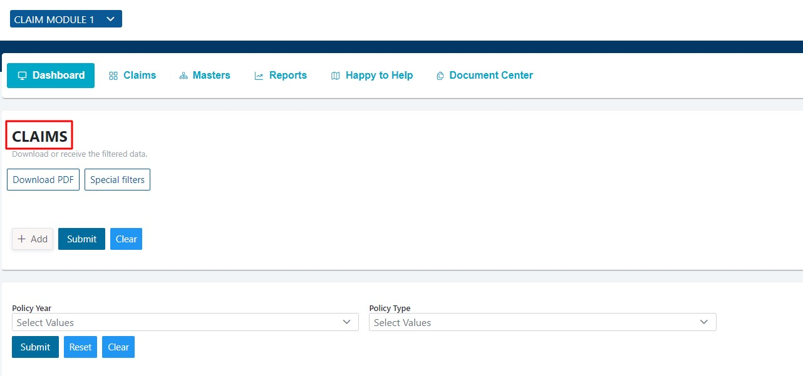
a.1.1. Download PDF:
You can "Download PDF" consists of all claims data like status of each status and Number of count for each status.
In Dashboard you can use "special filters" for adding fields.
Click on Special Filters option.
You will see 3 options.
1.Add: You can add Filed name, Condition and Comparison by clicking on “Add” option.
2.Submit: If entered details are correct you can submit by clicking on “Submit” option.
3.Clear: If entered details are not correct you can clear the data by clicking on “Clear” option.
You can check all the claims status by choosing options “Policy year” and “Policy type” under Special Filters.
You can select the values in the “Policy year” by using dropdown button and can select from year to year.
You can select the “Policy type” by using dropdown button and can select the Policy type.

When you click on this button it will show “secondary status” the data will be shown as follows
If you would like to choose another Policy type and Policy year click on “RESET” option.
You would like to clear the filled fields you can click on “Clear” option.

b.CLAIMS
b.1.1. Download MIS :
You can download the MIS file by clicking the “Download MIS” button.
Steps:
1.Visit the website InsurTech/Register.
2.Log in to your account with valid credentials.
3.After Logging in "CLAIM MODULE" page will be opened.
4.Click on "Claims" which is shown in Menu bar.
Next click on Register
After clicking on Register button, you will see three options which are "Summary", "Document Repository" and "OnAccount Payment Details".
Go to "Summary" which will be Opened and Shown by Default by clicking the “Register” button.
As of your convenience you can view the summary page by clicking on “Expand All” or “Collapse All” buttons.
Policy type: Click on dropdown and select the policy type.
Policy Year: Select the year based on Policy type.
Policy Number: Enter the Policy Number.
Insurer Name: Company name.
Insurers claim no: Enter Insurers Claim Number
Claim No: Enter the Claim Number
Date of intimation: Click on dropdown and select the policy type
Date of occurrence/Notice of Loss: Select the date for Date of Intimation
Claim description: Enter the Claim description
Loss location: Enter your Location
Estimate of loss in INR: Enter Estimate of loss in INR details
Profit Centre: Enter Profit Centre details
BL/AWB/LR No/Consignment Note No: Enter your BL/AWB/LR No/Consignment Note No.
BL/AWB/LR/Consignment Note Date: Select date for BL/AWB/LR/Consignment Not Date
Probable Cause of Damage: Enter the Probable Cause of Damage details
Additional Information: Enter the details for any additional Information

Here the Initiator Details will be shown as default and Admin can have the access to change the details.
Enter the Initiator Details Like
Initiators email: "You can change the mail id here
Initiators name: Click on dropdown and select the "Initiators name"
Initiators Division: Click on dropdown and select the "Initiators Division"
Initiators BU: "Click on dropdown and select the "Initiators BU"
Company: Click on dropdown and select the "Company"
Company Code: Click on dropdown and select the "Company Code"

Enter the Claim Financial Details Like.
Deductible: Enter Deductible details.
Outstanding reserves: Enter Outstanding reserves details
Final Claim Amount: Enter Final Claim Amount
On account payment amount: Enter On account payment amount details

Enter the Survey Organizer Details Like
Contact persons name to organise survey:Enter Contact persons name to organise survey
Contact persons mobile no:Enter Contact persons mobile no
Survey Organizer Email:Enter Survey Organizer Email
Here you can add the number of Survey Organizer details by clicking the “Add” button as shown in the fig
Enter Claim Coordinators Details Like.
Additional Claim Coordinator's Email ID: Enter Additional Claim Coordinator's Email ID.
Here you can add the number of Claim Coordinator (Additional Claim Coordinator's Email IDs) details by clicking the "Add" button as shown in the fig.

You Can Add Any Claim Attachments Here
Attachments: Add Attachments by "Drag and Drop" from your folders or else by clicking on the "Browse" button
Here you can add the number of Attachments by clicking the “Add” button as shown in the fig.
Enter Claim Coordinators Details Like.
Pending With:Click on dropdown and select the "Pending With" Option.
Reinstatement Status:Click on dropdown and select the "Reinstatement Status".
Enter Invoice Details Like
Invoice/PO Number:Enter Your "Invoice/PO Number"
Invoice/PO Date:Select the date for "Invoice/PO Date"
Invoice Value/PO Value:Enter the details for "Invoice Value/PO Value"

Enter Invoice Details Like
Assets:Click on dropdown and select the "Assets" Option.

Enter Test Details Like
Testname:Click on dropdown and select the "Testname"

Click on the "Submit" button after fill your all details in the summary page.
Go to "Document Repository" which will be Opened and Shown by Default when you click on the “Submit” button.
You can download the MIS by clicking the “Download MIS” button.
You can add the Repositories by clicking the “AddNew“button.
Click on “Add New” button, then one window will be open and you can upload shipment documents and any relevant details like.
Document Name: Enter the document name here.
Document Attachment: Attach a document by "Drag and Drop" or else click on the "Browse" button.
Next Click on the “Submit” Button.
The added Document Repository details will be shown in the "Document Repository" page in the form of tabular as shown in fig.
You can select the items from the "Dropdown" button and search the "Document Repositories" from the "Search" box as shown in the fig
Here you have an option to "View", "Edit" and "Delete" the repositories from "Actions". Also, you can download the attachments from "Download Attachments" as shown in the fig.
b.1.2.2.3.1 View:
If you click on “View” Symbol, then one window will be open to view the individual repository details.
As of your convenience you can expand or collapse the page by clicking on “Expand All” or “Collapse All” buttons.
You can download the MIS file by click on the “Download MIS” button.
If you click on "Edit" Symbol, then one window will be open to edit the individual repository details.
As of your convenience you can expand or collapse the page by clicking on "Expand All" or “Collapse All” buttons.
You can download the MIS file by click on the "Download MIS" button.
Also, you can attach the Document Repository file by clicking on the "Browse" button and add that file by clicking the "Submit" button.
You are able to view the “Workflow” status in the "Edit" page as shown in the fig.
And you can change the status by selecting the "Select Next Status Update" dropdown.
Next click on the Submitted option, then "Current Status" will be update as “Submitted”, and "Activity History" will be shown.
In the "Select Next Status Update" dropdown "Verified" and "Rejected" Options will be appear as in the fig
If you select "Rejected" option then "Current Status" will be updated as "Rejected" and "Change Status" dropdown will be shown until you change the status as "Verified".
If you click on “Delete” Symbol, then one alert box will be open Shows the message as “Are you sure you want to delete this job?”.
Then if you click on “Ok” button repository will be deleted.
Go to "OnAccount Payment Details" by click on that
You can add the Repositories by clicking the "AddNew" button
Click on “Add New” button, then one window will be open.
Enter Payment Details Like
Payment Amount: Enter the Payment Amount
Payment Date: Select the Payment Date
Payment Details:Enter the Payment Details
Payment Remarks: Enter the Payment Remarks.
You can able to add the number of payment details at a time by clicking the "Add" button, shown in the fig.
Next Click on the “Submit” Button.
The added details will be shown in the "OnAccount Payment Details" page in the form of tabular as shown in fig
You can select the items from the "Dropdown" button and you can search the "Payment Details" from the “Search” box as shown in the fig.
Here you have an option to "View", "Edit" and "Delete" the payment details from "Actions"
VIEW:
If you click on “View” Symbol, then one window will be open to view the individual payment details.
As of your convenience you can expand or collapse the page by clicking on “Expand All” or “Collapse All” buttons.
You can download the MIS file by click on the “Download MIS” button.
If you click on “Edit” Symbol, then one window will be open to edit the individual payment details.
As of your convenience you can expand or collapse the page by clicking on “Expand All” or “Collapse All” buttons
You can download the MIS file by click on the “Download MIS” button.
You can the details and click on the “Submit” button then payment details get modified and save in “OnAccount Payment Details” page.
To change the status as “Active” or “Inactive”, please select the “Change Status” dropdown in the “Workflow” division.
Next Click on the “Submit” button.
Then status will be updated for the payment details.
Also, you can see the activity history by clicking the “Activity History” button in the Workflow division
If you click on “Delete” Symbol, then one alert box will be open Shows the message as “Are you sure you want to delete this job?”.
Then if you click on “Ok” button payment details will be deleted.
In claims you can use special filters for adding Fields.
Click on Specials Filters option.
You will see three options
Add:You can add Filed name, Condition and Comparison by clicking on “Add” option
SubmitIf entered details are correct you can submit by clicking on “Submit” option
Clear:If entered details are not correct you can clear the data by clicking on “Clear” option”
You can check all the claims status by choosing options “Policy year” and “Policy type” under Special Filters.
You can select the values in the “Policy year” by using dropdown button and can select from year to year.
You can select the “Policy type” by using dropdown button and can select the Policy type.
After selecting the Policy year and Policy type Click on “Submit” option the data will be shown as follows.
If you would like to choose another Policy type and Policy year click on “RESET” option.
If you would like to clear the filled fields you can click on “Clear” option.

For the status fields we have following Actions like View, Edit, Download and Delete
“View “option is you can see all submitted details for claim.
“Edit” option is you can change the details if details are mismatching.
“Download” option you can download the report.
“Delete” option is to delete the report if generated file is not correct.
You can choose what are the fields you would like to see by clicking on Dropdown and you can see select the fields.

And in Search option you can search by Policy type name when entered Policy type name it will show the details who are insured with that Policy type.
By Bulk Upload option upload large volume of records at one time by reading each record from a CSV file.
Click on “Bulk Upload” option.
If you don't want to upload click on “cancel” it will stop uploading.
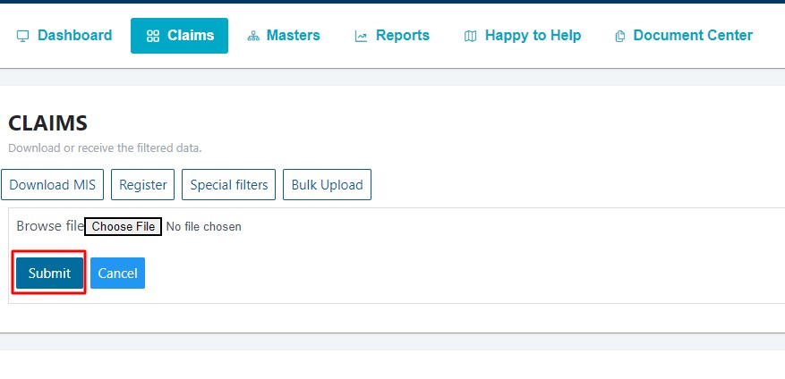
c.Masters
c.1. Master's BlockIn MASTERS we can create GROUP NAME as categorylike “Health Insurance” and for group name we can create a sub category like health, benefits etc.,
You can Download MIS which consists of Current Status
You can Download MIS for each Category by clicking on Dropdown Button and select the category.
By clicking on “Add new” option it will show Summary with required Fields.
By clicking on “Add” option in Summary you can enter one or more
If you don't need more fields you can close it by “close” button

Collapse all option when clicked on “Collapse all” it will hide all the fields it has


When clicked on “Expand all” it will show all the fields it has
When all the required fields has been filled and submitted it will show you the Current Job Status as follows
If you would like to see the details of the filled information click on EYE icon

If you would like to change or edit the details of the filled information click on ROUND icon

It will show you the Work flow
Current Status: It will show you as Active or Inactive
Change Status: Click on Dropdown and select option if he is not active anymore you can change the status to inactive
Activity history: It will show you Activity history how many times the status has been changed

If you like the Name, ID and other fields you can change it and click on submit
>
If you would like to delete the data click on “Delete” Icon the stored data will be deleted

You can see concern data by filtering the fields and also you can search by Job type


d.REPORTS
You can check reports in the graphical format
You can download the reports file by clicking the “Download PDF” button.
The circle represents how may claims are initiated and clicking on the circle it will show First Level with circle and data and Second Level empty
After Clicking on First Level Report Circle it will show the Second Level Report circle with Colour Representation
e.HAPPY TO HELP
If you have any Queries, Please feel free to Contact us.Name: COKUBE
Designation: Software Product Development
Organization: ONGO Framework
Email: info@ongoframework.com
f.DOCUMENT CENTRE
You can download the Documents from the Document Centre

Click on the File you would like to download.
2.Employee Module
Employee Module drives efficiency within your organization by automating the creation of resume documents and allowing you to automatically synchronize employee data between Open Asset and your CRM or ERP system.
- a.Dashboard
- a.1.Download PDF
- a.2.Special Filters
- a.3.Register
- a.3.1.Summary
- a.3.2.Dependents
- b.Employees
- b.1.Download MIS
- b.2.Register
- b.2.1.Summary
- b.2.2.Dependents
- b.3.Special Filters
- b.4.Bulk Upload
- c.Masters
- c.1.Download MIS
- c.2.Add New
- c.2.1.Summary
- c.2.1.1Health insurance Tab1
- c.2.1.2.Health insurance Tab2
- c.2.1.Summary
- d.Reports
- d.1.Download PDF
- e.Happy to Help
- f.Document Center
This is the Dashboard where you can see all the details like Status, options like Download PDF, Special Filters and Register
1) You can download or receive the filtered data
2) Select the Category and click on Download PDF
By Filtering data you can see the Primary status of the Employees on the Dashboard
To check the Secondary status click on Button at the right middle end and check the Secondary status on the Dashboard
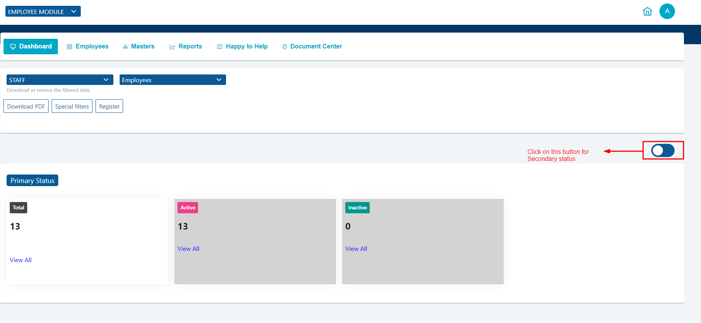
In Dashboard you can use “special filters” for adding fields
Click on Specials Filters option
You will see three options
Add: You can add Filed name, Condition and Comparison by clicking on “Add” option
Submit:If entered details are correct you can submit by clicking on “Submit” option
Clear: If entered details are not correct you can clear the data by clicking on “Clear” option
If you would like to register an employee
click on Register
After clicking on “Register” button you will see two sub jobs
a.3.1.Summary
a.3.2.Dependents
Enter Employee Details like
1. Name: Employee name
2. DOB: Employee Date of Birth
3. Gender: Select male (or) female
4. Grade: Enter the values in Grade (A or B or C)
5. Dependents: Like Father or Mother ( The option was hidden because it has a separate sub job)
6. Employee Premium: Enter the Amount
7. Email: Enter your Email ID
8. Mobile no: Enter Mobile number
9. Policy no: Enter the Policy Number
After entering all fields click on “Submit” the details will be saved
Collapse all option when clicked on “Collapse all” it will hide all the fields it has
When clicked on “Expand all” it will show all the fields it has
If you want to download the details click on Download MIS, it will download the details in .xlsx format
After clicking on “Submit” the details will be saved and redirected to “Dependents” page.
After redirected to “Dependents” page click on “Add New” option
After Clicking on “Add New” button it will take you to the Summary to fill required fields
Fill all the required fields like
1. Name: Father (or) Mother Name
2. Relationship: : Father (or) Mother
3. Age: If you choose Father enter the age of your father (or) If you choose mother enter the age of your mother
After entering all dependent details click on “Submit” the details will be saved and will be shown as
You can download this file by Download MIS option, file will be downloaded in .xlsx format with the status either Active or Inactive
If you would like to View, Edit or Delete the file you can use following Actions.
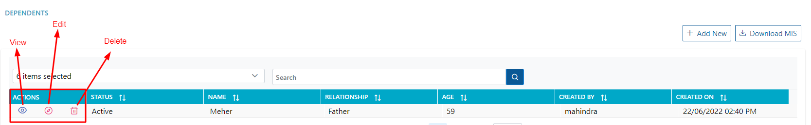
View: You can see the saved details both employee and dependents by clicking on EYE icon
If you would like to know that the Employee is either in Active or Inactive status
Active: Display with Blue Colour
Inactive: Normal colour
Collapse all option it will hide Employee Details and Dependents tab will be shown
When clicked on “Expand all” it will show all the fields it has
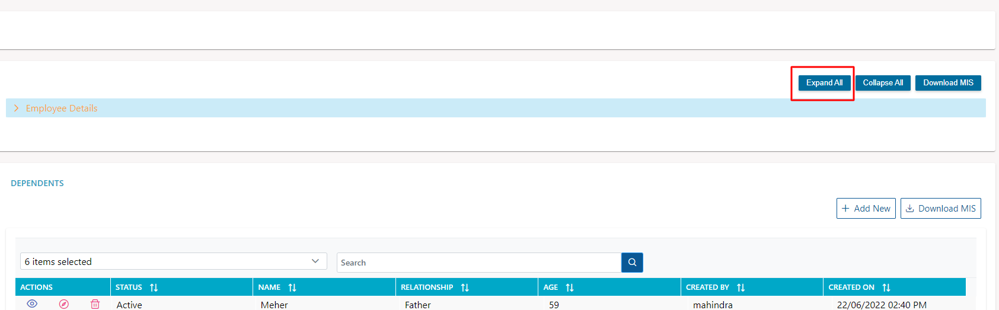
Edit:You can Edit the both employee details and Dependents details by clicking on round icon
It will show you the Work flow for Employee
1) Current Status: It will show you as Active or Inactive
2) Change Status: Click on Dropdown and select option if he is not active anymore you can change the status to inactive
3) Activity history: It will show you Activity history how many times the status has been changed
For Employees
For Dependents
If you would like to change the details you can change it and click on submit
For Employees

For Dependents
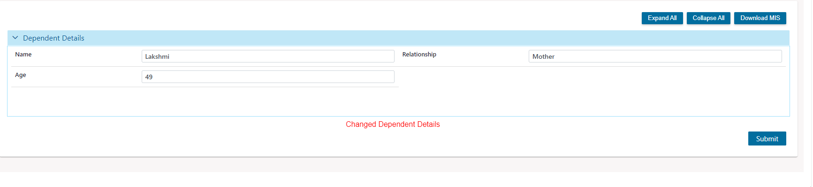
Delete: If you would like to delete the data click on “Delete” Icon the stored data will be deleted
You can see concern data by filtering the fields and also you can search by Job type
b.1.Download MIS
1) You can download or receive the filtered data.
2) Select the appropriate Field and click on Download MIS.
By Filtering data you can see Status
You can see the data by appropriate field you have chosen
After selecting fields it will display the fields what you have chosen
After selecting fields when you click on Download MIS it will download with the fields what you have selected
If you would like to register an employee
After clicking on “Register” button you will see two sub jobs
b.2.2.Dependents
b.2.1.Summary
Enter Employee Details like
1.Name: Employee name
2.DOB: Employee Date of Birth
3.Gender: Select male (or) female
4.Grade: Enter the values in Grade (A or B or C)
5.Dependents: Like Father or Mother ( The option was hidden because it has a separate sub job)
6.Employee Premium: Enter the Amount
7.Email: Enter your Email ID
8.Mobile no: Enter Mobile number
9.Policy no: Enter the Policy Number
After entering all fields click on “Submit” the details will be saved
Collapse all option when clicked on “Collapse all” it will hide all the fields it has
When clicked on “Expand all” it will show all the fields it has
If you want to download the details click on Download MIS, it will download the details in .xlsx format
After clicking on “Submit” the details will be saved and redirected to “Dependents” page.
After redirected to “Dependents” page click on “Add New” option
After Clicking on “Add New” button it will take you to the SUMMARY to fill required fields
Fill all the required fields like
1. Name: Father (or) Mother Name
2. Relationship: Father (or) Mother
3. Age: If you choose Father enter the age of your father (or) If you choose mother enter the age of your mother
After entering all dependents details click on “Submit” the details will be saved and will be shown as
You can download this file by Download MIS option; file will be downloaded in .xlsx format with the status either Active or Inactive
If you would like to View, Edit or Delete the file you can use following Actions.
View: You can see the saved details both employee and dependents by clicking on EYE icon
If you would like to know that the Employee is either in Active or Inactive status
Active:
Inactive:
Collapse all it will hide Employee Details and Dependents tab will be shown
When clicked on “Expand all” it will show all the fields it has
Edit: You can Edit the both employee details and Dependents details by clicking on round icon
It will show you the Work flow for Employee
1) Current Status: It will show you as Active or Inactive
2) Change Status: Click on Dropdown and select option if he is not active anymore you can change the status to inactive
3) Activity history: It will show you Activity history how many times the status has been changed
For Employees
For Dependents
If you would like to change the details you can change it and click on submit
For Employees
For Dependents
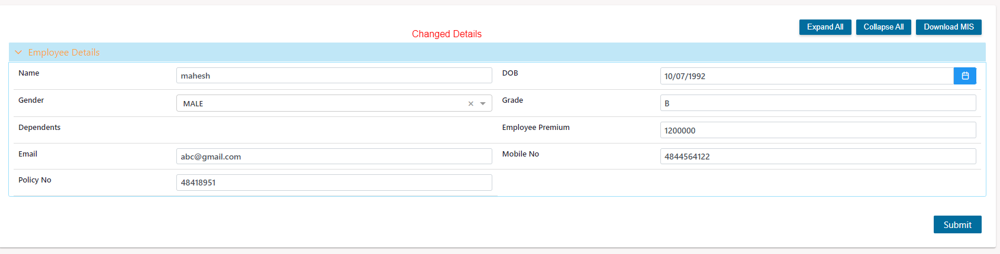
Delete: If you would like to delete the data click on “Delete” Icon the stored data will be deleted
If you want to Download File Click on Download icon
You can see concern data by filtering the fields and also you can search by Job type
In Employees page you can use “special filters” for adding fields.
Click on Specials Filters option
You will see three options
Add: You can add Filed name, Condition and Comparison by clicking on “Add” option
Submit: If entered details are correct you can submit by clicking on “Submit” option
Clear: If entered details are not correct you can clear the data by clicking on “Clear” option
By Bulk Upload option upload large volume of records at one time by reading each record from .xlsx file.
Click on “Bulk Upload” option
Click on choose file option and select the files you want to upload and click on submit
If you don't want to upload click on “cancel” it will stop uploading
In MASTERS we can create GROUP NAME as category like “Health Insurance” and for group name we can create a sub category like health, benefits etc.,
You can Download MIS which consists of Current Status
You can Download MIS for each Category by clicking on Dropdown Button and select the category.
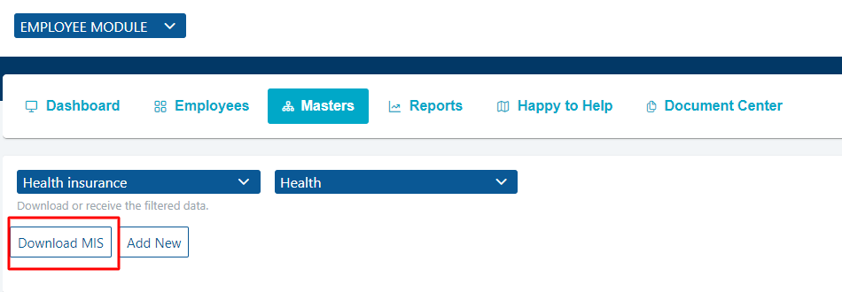
By clicking on “Add new” option it will show Summary
c.2.1.Summary
Fill the required Fields in
1.Name: Enter the name
2. ID: Enter the name
1.Ins start date
2. Ins end date
3. Status
After entering all details click on Submit
By clicking on “Add” option in Summary you can enter one or more fields
If you don't need more fields you can close it by “close” button
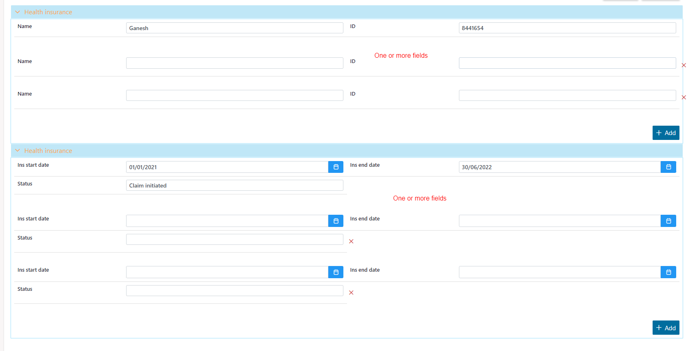
Collapse all option when clicked on “Collapse all” it will hide all the fields it has
When clicked on “Expand all” it will show all the fields it has
When all the required fields has been filled and submitted it will show you the Current Job Status as follows
If you like to change or edit the details of the filled information click on ROUND icon
It will show you the Work flow
1) Current Status: It will show you as Active or Inactive
2) Change Status: Click on Dropdown and select option if he is not active anymore you can change the status to inactive
3) Activity history: It will show you Activity history how many times the status has been changed
If you would like to change the Name, ID and other fields you can change it and click on submit

If you would like to delete the data click on “Delete” Icon the stored data will be deleted
You can see concern data by filtering the fields and also you can search by Job type
If you have any Queries, Please feel free to Contact us.
Name: COKUBE
Designation: Software Product Development
Organization: ONGO Framework
Email: info@ongoframework.com
You can download the Documents from the Document Centre
Click on the File you would like to download.
3.Portfolio Module
- a.Dashboard
- a.1.1. Download PDF
- a.1.2. Special Filter
- a.1.3. Year Range
- b.Policies
- b.1.1. Download MIS
- b.1.2. Register
- b.1.2.1 Summary
- b.1.2.1.1. POLICY DETAILS
- b.1.2.1.2. ORGANISATION DETAILS
- b.1.2.1.3. MANDATORY DOCUMENTS
- b.1.2.2. Action Option
- b.1.2.2.1. Non Project Non Financial Endorsement
- b.1.2.2.1.1 NONFINANCIAL ENDORSEMENT DETAILS
- b.1.2.2.1.2 MANDATORY DOCUMENTS
- b.1.2.2.2. Non Project Financial Endorsement
- b.1.2.2.2.1. ENDORSEMENT DETAILS
- b.1.2.2.2.2. ATTACHMENT
- b.1.2.2.1. Non Project Non Financial Endorsement
- b.1.2.3. DOCUMENT REPOSITORY
- b.1.2.3.1. Add New
- b.1.2.3.2. Download MIS
- b.1.2.3.3. Table
- b.1.2.3.3.1. View
- b.1.2.3.3.1. Edit
- b.1.2.3.3.1. Delete
- b.1.2.4. COMMUNICATION HISTORY
- b.1.2.4.1. Add New
- b.1.2.4.2. Download MIS
- b.1.2.5. claims
- b.1.2.5.1. Download MIS
- b.1.2.5.2. Register
- b.1.2.5.2.1. Summary
- b.1.2.5.2.1.1. POLICY DETAILS
- b.1.2.5.2.1.2. CLAIM DETAILS
- b.1.2.5.2.1.3. INITIATOR DETAILS
- b.1.2.5.2.1.4. CLAIM FINANCIALS
- b.1.2.5.2.1.5. SURVEY ORGANISER
- b.1.2.5.2.1.6. CLAIM COORDINATORS
- b.1.2.5.2.1.7. CLAIM ATTACHMENTS
- b.1.2.5.2.1.8. REINSTATEMENT DETAILS
- b.1.2.5.2.1.9. INVOICE DETAILS
- b.1.2.5.2.1.10. ASSETS
- b.1.2.5.2.1.11. TEST
- b.1.2.5.2.1. Summary
- b.1.2.1 Summary
- b.1.3. Special Filter
- b.1.4. Bulk Upload
- c.Masters
- c.1. Master's Block
- c.1.1. Download MIS
- c.1.2. Add New
- c.1. Master's Block
- d.Reports
- e.Happy to Help

a.1.1. Download PDF You can download PDF by clicking the "Download PDF" button.

In Dashboard you can use special filters for adding a Fields.
Click on Specials Filters option.

You will see 3 options:
1.Add
2.Submit
3.Clear
1.ADD:
You can add Filed name, Condition and Comparison by clicking on “Add” option. And clicking on add option it will add more add fields.

2.SUBMIT:
If entered details are correct you can submit by clicking on “Submit” option.

CLEAR:
If entered details are not correct you can clear the data by clicking on “Clear” option.

1.SUBMIT
2.RESET
3.CLEAR
1.SUBMIT:
If entered details are correct you can submit by clicking on “Submit” option.

After selecting the Policy year and Policy type Click on “Submit” option the data will be shown as follows in “Primary Status"

When you click on this button it will show “secondary status” the data will be shown as follows.

2.RESET:
If you would like to choose like other policy type and year so we can click on "RESET" option.

3.CLEAR:
If entered details are not correct you can clear the data by clicking on “Clear” option.

Policy is a deliberate system of guidelines to guide decisions and achieve rational outcomes. A policy is a statement of intent and is implemented as a procedure or protocol.

b.1.1. Download MIS You can download PDF by clicking the "Download MIS" button.


After clicking on Register button you will see three options which are "Summary", "Document Repository","Communication History","Claims","Employees","Assets".
Go to "Summary" which will be Opened and Shown by Default by clicking the “Register” button.
As of your convenience you can view the summary page by clicking on “Expand All” or “Collapse All” buttons.

Policy Type: Click on dropdown and select the policy type.
Policy No: Enter policy number.
Policy Start Date: Start date for policy.
Policy End Date: End date for policy.
Effective Date: In which date we are effective.
Year Range: we can set the yearly range.
Risk Description: In simple terms, risk is the possibility of something bad happening. Risk involves uncertainty about the effects/implications of an activity with respect to something that humans value
Sum Insured: The amount that the insurance company pays to the policyholder.
Net Premium: An amount to be paid for a contract of insurance.
CoInsurance Pattern:
Remarks: we can mention the remarks section.
GST In: GST number.
Insurer: Company name.

Enter the Organisation Details Like.
Initiators email :You can change the mail id here.

Enter the Mandatory Documents Like.
Policy Copy: Add Policy Copy by “Drag and Drop” from your folders or else by clicking on the “Browse” button.
Quote: Add Quote by “Drag and Drop” from your folders or else by clicking on the “Browse” button.

SUBMIT: Click on the “Submit” button after fill your all details in the summary page.

So in action you can select the options by using dropdown.
In this "Select Service" options are " Non Project Nonfinancial Endorsement" and " Non Project Financial Endorsement"

As of your convenience you can view the summary page by clicking on “Expand All” or “Collapse All” buttons.

Endorsement no: Enter the register Endorsement number.
Effective Date: Enter the Effective date.
Remarks: We can mention the remarks section.
GST In: GST number.
Endorsement copy: Browse and drag and drop the images.
After entering the required fields and "submit" the form below fig.

As of your convenience you can view the summary page by clicking on “Expand All” or “Collapse All” buttons.

Effective Date: Enter the Effective date.
Endorsement No:Enter the register Endorsement number.
Differential Sum Insured: Enter the Sum Insured.
Differential Premium Amount: Enter the amount.
Remarks: We can mention the remarks section.
GST In:GST number.
Endorsement Copy: Browse and drag and drop the images.
After entering the required fields and "submit" the form below fig.

Go to "Document Repository" which will be Opened and Shown by Default when you click on the “Submit” button.
b.1.2.3.1. Add New
b.1.2.3.2. Download MIS
You can add the Repositories by clicking the “Add New“ button.
You can download the MIS by clicking the “Download MIS” button.

You can select the items from the “Dropdown” button and search the “Document Repositories” from the “Search” box as shown in the fig.
Here you have an option to “View”, “Edit” and “Delete” the repositories from “Actions”.

If you click on “View” Symbol, then one window will be open to view the individual repository details.
As of your convenience you can expand or collapse the page by clicking on “Expand All” or “Collapse All” buttons.
You can download the MIS file by click on the “Download MIS” button.

If you click on “Edit” Symbol, then one window will be open to edit the individual repository details.
As of your convenience you can expand or collapse the page by clicking on “Expand All” or “Collapse All” buttons.
You can download the MIS file by click on the “Download MIS” button.

You are able to view the “Workflow” status in the “Edit” page as shown in the fig.

And you can change the status by selecting the “Select Next Status Update” dropdown.
Next click on the Submitted option, then “Current Status” will be update as “Inactive”, and “Activity History” will be shown.
In the “Select Next Status Update” dropdown “Active” and “Inactive” Options will be appear as in the fig.

If you select “Active” option then “Current Status” will be updated as “Active”.

If you select “Inactive” option then “Current Status” will be updated as “Inactive” and “Change Status” dropdown will be shown until you change the status as “Active”.

If you click on “Delete” Symbol, then one alert box will be open Shows the message as “Are you sure you want to delete this job?”.

Go to "Communication History" by click on that.
You can download the MIS by clicking the “Download MIS” button.
You can add by clicking the “Add New“ button.
b.1.2.4.1.Add New
b.1.2.4.2.Download MIS

Click on “Add New” button, then one window will be open.

You can select the items from the “Dropdown” button and you can search the “Communication History” from the “Search” box as shown in the fig.

Here you have an option to “View”, “Edit” and “Delete” the payment details from “Actions”.

If you click on “View” Symbol, then one window will be open to view the individual payment details.
As of your convenience you can expand or collapse the page by clicking on “Expand All” or “Collapse All” buttons.
You can download the MIS file by click on the “Download MIS” button.

If you click on “Edit” Symbol, then one window will be open to edit the individual payment details.
As of your convenience you can expand or collapse the page by clicking on “Expand All” or “Collapse All” buttons.
You can download the MIS file by click on the “Download MIS” button.

You are able to view the “Workflow” status in the “Edit” page as shown in the fig.

And you can change the status by selecting the “Select Next Status Update” dropdown.
Next click on the Submitted option, then “Current Status” will be update as “Inactive”, and “Activity History” will be shown.
In the “Select Next Status Update” dropdown “Active” and “Inactive” Options will be appear as in the fig.

If you select “Active” option then “Current Status” will be updated as “Active”.

If you select “Inactive” option then “Current Status” will be updated as “Inactive” and “Change Status” dropdown will be shown until you change the status as “Active”.

If you click on “Delete” Symbol, then one alert box will be open Shows the message as “Are you sure you want to delete this job?”.
Then if you click on “Ok” button repository will be deleted.

Go to "Communication History" by click on that.
You can download the MIS by clicking the “Download MIS” button.
You can add by clicking the “Add New“ button.
b.1.2.5.1. Download MIS

b.1.2.5.2. Register
b.1.2.5.2.1. Summary
As of your convenience you can view the summary page by clicking on “Expand All” or “Collapse All” buttons.

b.1.2.5.2.1.1. POLICY DETAILS
Enter your Policy Details like.
Policy type:Click on dropdown and select the policy type.
Policy Year:Select the year based on Policy type.
Policy Number:Enter the Policy Number.
Insurer Name:Company name.

Enter the Claim Details Like.
Insurers claim no:Enter Insurers Claim Number.
Claim No:Enter the Claim Number.
Date of intimation:Select the date for Date of Intimation .
Date of occurrence/Notice of Loss:Select the date for Date of occurrence/Notice of Loss.
Claim description:Enter the Claim description.
Loss location:Enter your Location.
Estimate of loss in INR:Enter Estimate of loss in INR details.
Profit Centre: Enter Profit Centre details.
BL/AWB/LR No/Consignment Note No: Enter your BL/AWB/LR No/Consignment Note No.
BL/AWB/LR/Consignment Note Date: Select date for BL/AWB/LR/Consignment Not Date.
Probable Cause of Damage: Enter the Probable Cause of Damage details.
Additional Information: Enter the details for any additional Information.

Here the Initiator Details will be shown as default and Admin can have the access to change the details.
Enter the Initiator Details Like.
Initiators email: You can change the mail id here.
Initiators name: Click on dropdown and select the “Initiators name”.
Initiators Division: Click on dropdown and select the “Initiators Division”.
Initiators BU: Click on dropdown and select the “Initiators BU”.
Company: Click on dropdown and select the “Company”.
Company Code: Click on dropdown and select the “Company Code”.

Enter the Claim Financial Details Like.
Deductible:Enter Deductible details.
Outstanding reserves: Enter Outstanding reserves details.
Final Claim Amount: Enter Final Claim Amount.
On account payment amount: Enter On account payment amount details.

Enter the Survey Organizer Details Like.
Contact persons name to organize survey: Enter Contact person's name to organize survey.
Contact persons mobile no:Enter Contact persons mobile no.
Survey Organizer Email: Enter Survey Organizer Email.

Here you can add the number of Survey Organizer Details by clicking the “Add” button as shown in the fig.
Enter Claim Coordinators Details Like.
Additional Claim Coordinator's Email ID: Enter Additional Claim Coordinator's Email ID.

Here you can add the number of Claim Coordinator (Additional Claim Coordinator's Email IDs) details by clicking the “Add” button as shown in the fig.
You Can Add Any Claim Attachments Here.
Attachments:Add Attachments by “Drag and Drop” from your folders or else by clicking on the “Browse” button.
Here you can add the number of Attachments by clicking the “Add” button as shown in the fig.

Enter Reinstatement Details Like.
Pending With: Click on dropdown and select the “Pending With” Option.
Reinstatement Status: Click on dropdown and select the “Reinstatement Status”.

Enter Invoice Details Like.
Invoice/PO Number:Enter Your “Invoice/PO Number”.
Invoice/PO Date: Select the date for “Invoice/PO Date”
Invoice Value/PO Value:Enter the details for “Invoice Value/PO Value”.

Enter Assets Details Like.
Assets:Click on dropdown and select the “Assets” Option.

Enter Test Details Like.
Testname:Click on dropdown and select the “Testname”.

SUBMIT:
Click on the “Submit” button after fill your all details in the summary page.

We can use special filters for adding Fields.
Click on Specials Filters option.

You will see three options.
Add: You can add Filed name, Condition and Comparison by clicking on “Add” option.
Submit:If entered details are correct you can submit by clicking on “Submit” option.
Clear:If entered details are not correct you can clear the data by clicking on “Clear” option.
You can check all by choosing options “Year Range” , " Insurer" and “Policy Type” under Special Filters.

After selecting the "Year Range", "Insurer" and "Policy Type" Click on “Submit” option the data will be shown as follows.

If you would like to choose another " Year Range " , " Insurer " and "Policy Type" click on “RESET” option.

If you would like to clear the filled fields you can click on “Clear” option.

For the status fields we have following Actions like View, Edit, Download and Delete.

View option is you can see all submitted details for claim.
Edit option is you can change the details if details are mismatching.
Download option you can download the report.
Deleteoption is to delete the report if generated file is not correct.
You can choose what are the fields you would like to see by clicking on Dropdown and you can see select the fields.

In Search option you can search by words on the table.

By Bulk Upload option upload large volume of records at one time by reading each record from a CSV file.
Click on “Bulk Upload” option.

Click on "Choose File" option and select the files you want to upload and click on "Submit".
If you don't want to upload click on “Cancel” it will stop uploading.

c.1.Master's Block
c.1.1. Download MIS
c.1.2. Add New
In MASTERS we can create GROUP NAME as category like “Health Insurance” and for group name we can create a sub category like health, benefits etc.,

You can download the MIS by clicking the “Download MIS” button.
You can add by clicking the “Add New“ button.

By clicking on “Add new” option it will show Summary with required Fields.
By clicking on “Add” option in Summary you can enter one or more.


If you don’t need more fields you can close it by “close” button.
As of your convenience you can view the summary page by clicking on “Expand All” or “Collapse All” buttons.
Expand All

Collapse All

When all the required fields has been filled and submitted it will show you the "Current Job Status" as follows.

For the status fields we have following Actions like View, Edit and Delete.

And you can change the status by selecting the “Select Next Status Update” dropdown.
Next click on the Submitted option, then “Current Status” will be update as “Inactive”, and “Activity History” will be shown.
In the “Select Next Status Update” dropdown “Active” and “Inactive” Options will be appear as in the fig.

You can choose what are the fields you would like to see by clicking on Dropdown and you can see select the fields.

In Search option you can search by words on the table.

You can check reports in the graphical format.

The circle represents how may claims are initiated and clicking on the circle it will show First Level with circle and data and Second Level empty.

After Clicking on First Level Report Circle it will show the Second Level Report circle with Color Representation

If you have any Queries, Please feel free to Contact us.
Name:COKUBE
Designation:Software Product Development
Organization: ONGO Framework
Email: info@ongoframework.com

5.Asset Module
The Assets module contains applications that are designed to manage the assets that are owned or leased by your company from purchase to salvage, from the beginning to the end of the life cycle for an asset.
Contents
- a.Dashboard
- a.1. Assets
- a.1.1. Download MIS
- a.1.2. Special Filters
- a.1.2.1. Add
- a.1.2.1.1. Field Name
- a.1.2.1.2. Condition
- a.1.2.1.3. Comparision
- a.1.2.2. Submit
- a.1.2.3. Clear
- a.1.2.1. Add
- a.2. Primary Status
- a.3. Secondary Status
- a.1. Assets
- b. Assets
- b.1. Download MIS
- b.2. Register
- b.2.1. Summary
- b.2.1.1. Asset Details
- b.2.1.2. Vendor
- b.2.2. Sub Assets
- b.2.2.1. Asset Details
- b.2.2.2. Tabular Report
- b.2.2.2.1. View
- b.2.2.2.2. Edit
- b.2.2.2.3. Delete
- b.2.3. Depreciation Endorsement
- b.2.3.1. Depreciation Value
- b.2.3.2. Table
- b.2.3.2.1. View
- b.2.3.2.2. Edit
- b.2.3.2.3. Delete
- b.2.4. Claims
- b.2.4.1 Summary Page
- b.2.4.1.1. POLICY DETAILS
- b.2.4.1.2. CLAIM DETAILS
- b.2.4.1.3. INITIATOR DETAILS
- b.2.4.1.4. CLAIM FINANCIALS
- b.2.4.1.5. SURVEY ORGANIZER
- b.2.4.1.6. CLAIM COORDINATORS
- b.2.4.1.7. CLAIM ATTACHMENTS
- b.2.4.1.8. REINSTATEMENTS DETAILS
- b.2.4.1.9. INVOICE DETAILS
- b.2.4.1.10. ASSETS
- b.2.4.1.11. TEST
- b.2.4.1.12. SUBMIT
- b.2.4.2. Table
- b.2.4.2.1. View
- b.2.4.2.2. Edit
- b.2.4.2.3. Delete
- b.2.4.1 Summary Page
- b.2.1. Summary
- b.3. Special Filters
- b.4. Bulk Upload
- b.5. Table
- b.3. Special
- c. Masters
- c.1. Download MIS
- c.2. Add New Option
- c.3. Collapse All
- c.4. Expand All
- d. Reports
- e. Happy to Help
- f. Document Center
Please Select the “Asset Module” from the dropdown button in the top of the page and click on the “Dashboard” key button in the menu key bar.
You can see the “ASSETS” and “Primary Status” on the web page which is loaded default.
a.1. Assets
In Assets you can download the PDF report by clicking the “Download PDF” button.
Also, you have the “Special filter” button to add the fields here.
Please click on the “Special Filter” button.
Then 3 buttons will be displayed on the page like.
1.Add
2.Submit
3.Clear
Click on the add button, so you can able to add the number of fields at time.
After added the fields, click on the “Submit” button to save them.
If you want to clear all the fields at a time, then click on the “Clear” button as shown in the fig.
Status
Primary Status
In Primary Status you can able to see Total Assets, Active Assets, Inactive Assets status.
Also, you can able to see Total Assets, Active Assets, Inactive Assets reports by clicking the “View All” buttons as shown in the fig.
If you want to see “SECONDARY STATUS”, then click on the top right-side button as shown in the fig.
Secondary Status
When you click on right side corner button “SECONDARY STATUS” will be displayed.
Please click on the “Assets” key button in the menu key bar.
You can see the “ASSETS” and “Asset Reports” in the form of tabular on the web page which is loaded default.
b.1. Download MIS
You can download the MIS file by clicking the “Download MIS” button.
And you can select the fields for the tabular data columns from the dropdown, also you can search the reports in the search box for the tabular data as shown in the fig.
b.2.Register
After clicking on Register button, you will see four options which are " Summary", "Sub Assets" and Depreciation Endorsements" and “Claims”.
Go to "Summary" which will be Opened and Shown by Default by clicking the “Register” button.
As of your convenience you can view the summary page by clicking on “Expand All” or “Collapse All” buttons.
Enter the Asset Details like.
Asset ID: Enter Asset ID.
Asset Name: Enter the Asset Name.
Asset type: Enter the Asset Type.
Asset sub type: Select the Asset Sub Type from dropdown.
Asset Value: Enter the Asset Value.
Select the Vendor from the Vendor dropdown.
Vendor: Enter Asset ID.
Click on the “Submit” button after fill your all details in the summary page.
Also you can download the MIS file by click on the ”Download MIS” button.
Go to "Sub Assets" which will be Opened and Shown by Default when you click on the “Submit” button.
You can download the MIS by clicking the “Download MIS” button.
You can add the Sub Assets by clicking the “Add New“ button.
Click on the “Add New” button.
Then one window will be opened.
Enter your Asset Details like.
Name: Enter the name.
Click on the “Submit” button to save the details.
After click on the Submit button, you can see the saved details on the Sub Assets page in the tabular form.
Like that you can add the number of Sub Assets.
You can select the items in the Dropdown for the tabular form.
Also, you can search the reports in the Search Box as shown in fig.
In the tabular form you have the Actions column.
You can view, edit and delete the individual report data by click on the View, Edit and Delete symbols.
Then one page will be opened and you can View the individual report data.
Also, you have the Download MIS button to download the MIS file as shown in fig.
Then one page will be opened and you can Edit the individual report data.
You can able to change the status as Active or Inactive in the Workflow division by selecting the Change Status dropdown.
Also, able to see the activity history by click on Activity History.
Also, you have the Download MIS button to download the MIS file as shown in fig.
Click on the Submit button to save the edited data.
Click on the Delete Symbol for any single report data.
Then one alert box will be opened and show the message as “Are you sure you want to delete this job?”, then click on the OK button data will be deleted for the individual report.
You can download the MIS by clicking the “Download MIS” button.
You can add the Sub Assets by clicking the “Add New“ button.
Click on the “Add New” button.
Then one window will be open.
Enter Depreciation Endorsement details like.
Depreciation Value: Enter the name.
Click on the “Submit” button to save the details.
After click on the Submit button, you can see the saved details on the Sub Assets page in the tabular form.
Like that you can add the number of Sub Assets.
You can select the items in the Dropdown for the tabular form.
Also, you can search the reports in the Search Box as shown in fig.
In the tabular form you have the Actions column.
You can view, edit and delete the individual report data by click on the View, Edit and Delete symbols.
Click on the View Symbol for any single report data
Then one page will be opened and you can View the individual report data.
Also, you have the Download MIS button to download the MIS file as shown in fig.
Then one page will be opened and you can Edit the individual report data.
You can able to change the status as Active or Inactive in the Workflow division by selecting the Change Status dropdown.
Also, able to see the activity history by click on Activity History.
Also, you have the Download MIS button to download the MIS file as shown in fig.
Click on the Submit button to save the edited data.
Then one alert box will be opened and show the message as “Are you sure you want to delete this job?”, then click on the OK button data will be deleted for the individual report.
You can download the MIS by clicking the “Download MIS” button.
You can add the claims by clicking the “Add New“ button.
If you click on the “Add New” button “Summary” page will be open in new window.
As of your convenience you can view the summary page by clicking on “Expand All” or “Collapse All” buttons.
Policy type: Click on dropdown and select the policy type.
Policy Year: Select the year based on Policy type.
Policy Number: Enter the Policy Number.
Insurer Name: Company name.

Insurers claim no: Enter Insurers Claim Num.
Claim No: Enter the Claim Number.
Date of intimation: Select the date for Date of Intimation
Date of occurrence/Notice of Loss: Select the date for Date of occurrence/Notice of Loss.
Claim description: Enter the Claim description.
Loss location: Enter your Location.
Estimate of loss in INR: Enter Estimate of loss in INR details.
Profit Centre: Enter Profit Centre details.
BL/AWB/LR No/Consignment Note No: Enter your BL/AWB/LR No/Consignment Note No.
BL/AWB/LR/Consignment Note Date: Select date for BL/AWB/LR/Consignment Not Date.
Probable Cause of Damage: Enter the Probable Cause of Damage details.
Additional Information: Enter the details for any additional Information.
Enter the Initiator Details Like.
Initiators email: You can change the mail id here.
Initiators name: Click on dropdown and select the “Initiators name”.
Initiators Division: Click on dropdown and select the “Initiators Division”.
Initiators BU: Click on dropdown and select the “Initiators BU”.
Company: Click on dropdown and select the “Company”.
Company Code: Click on dropdown and select the “Company Code”.
Deductible: Enter Deductible details.
Outstanding reserves: Enter Outstanding reserves details.
Final Claim Amount: Enter Final Claim Amount.
On account payment amount: Enter On account payment amount.

Contact persons name to organise survey: Enter Contact persons name to organise survey.
Contact persons name to organise survey: Enter Contact persons mobile no.
Contact persons name to organise survey: Enter Survey Organizer Email.

Here you can add the number of Survey Organizer details by clicking the “Add” button as shown in the fig.
Additional Claim Coordinator's Email ID: Enter Additional Claim Coordinator's Email ID.
Here you can add the number of Claim Coordinator (Additional Claim Coordinator's Email IDs) details by clicking the “Add” button as shown in the fig.
Attachments: Add Attachments by “Drag and Drop” from your folders or else by clicking on the “Browse” button.
Here you can add the number of Attachments by clicking the “Add” button as shown in the fig.

Pending With: Click on dropdown and select the “Pending With” Option.
Reinstatement Status: Click on dropdown and select the “Reinstatement Status”.

Invoice/PO Number: Enter Your “Invoice/PO Number”.
Invoice/PO Date: Select the date for “Invoice/PO Date”.
Invoice Value/PO Value: Enter the details for “Invoice Value/PO Value”.
Assets: Click on dropdown and select the “Assets” Option.
Testname: Click on dropdown and select the “Testname”.

After click on the submit button then the data will be added in the Claims page and it is shown in the tabular form as shown in the fig.Like that you can add the number of Claims.
You can select the items in the Dropdown for the tabular form.
Also, you can search the reports in the Search Box as shown in fig.
In the tabular form you have the Actions column.
You can view, edit and delete the individual report data by click on the View, Edit and Delete symbols.
Then one page will be opened and you can View the individual report data.
You can Claim Trends in Summary page.
Also, you have the Download MIS button to download the MIS file as shown in below images.
Then one page will be opened and you can Edit the individual report data.
You can able to change the status as Active or Inactive in the Workflow division by selecting the Change Status dropdown.
Also, able to see the activity history by click on Activity History.
Scroll down the page and you can edit the Claim Details below by expand the page.
Also, you have the Download MIS button to download the MIS file as shown in fig.
Click on the Submit button to save the edited data.
Also you can able to send the email notification as shown in the fig.
Then one alert box will be opened and show the message as “Are you sure you want to delete this job?”, then click on the OK button data will be deleted for the individual report.
Click on Specials Filters option.
You will see three options
Add: You can add Filed name, Condition and Comparison by clicking on “Add” option.
Submit: If entered details are correct you can submit by clicking on “Submit” option.
Clear: If entered details are not correct you can clear the data by clicking on “Clear” option.
For the status fields we have following Actions like View, Edit, Download and Delete.
“View “option is you can see all submitted details for claim.
“Edit” option is you can change the details if details are mismatching.
“Download” option you can download the report.
“Delete” option is to delete the report if generated file is not correct.
You can choose what are the fields you would like to see by clicking on Dropdown and you can see select the fields.
And in Search option you can search by Policy type name when entered Policy type name it will show the details who are insured with that Policy type.
Click on “Bulk Upload” option.
Click on choose file option and select the files you want to upload and click on submit.
If you don't want to upload click on “cancel” it will stop uploading

In MASTERS we can create GROUP NAME as category like “Health Insurance” and for group name we can create a sub category like health, benefits etc.,

You can Download MIS which consists of Current Status.

You can Download MIS for each Category by clicking on Dropdown Button and select the category.

By clicking on “Add new” option it will show Summary with required Fields.
By clicking on “Add” option in Summary you can enter one or more.

If you don't need more fields you can close it by “close” button.
Collapse all option when clicked on “Collapse all” it will hide all the fields it has
When clicked on “Expand all” it will show all the fields it has.

When all the required fields has been filled and submitted it will show you the Current Job Status as follows.

If you would like to see the details of the filled information click on EYE icon.

If you would like to change or edit the details of the filled information click on ROUND icon.
It will show you the Work flow.
1) Current Status: It will show you as Active or Inactive.
2) Change Status: Click on Dropdown and select option if he is not active anymore you can change the status to inactive.
3) Activity history: It will show you Activity history how many times the status has been changed.

If you like the Name, ID and other fields you can change it and click on submit.
If you would like to delete the data click on “Delete” Icon the stored data will be deleted
You can see concern data by filtering the fields and also you can search by Job type
You can download the reports file by clicking the “Download PDF” button.

The circle represents how may claims are initiated and clicking on the circle it will show First Level with circle and data and Second Level empty.
After Clicking on First Level Report Circle it will show the Second Level Report circle with Colour Representation.

Name: COKUBE
Designation: Software Product Development
Organization: ONGO Framework
Emailinfo@ongoframework.com
Click on the File you would like to download.
6.Supplier Module
Keep your supplier information at hand. Manage your suppliers in a centralized, cloud-based list. Capture details for both direct suppliers and the wider supply chain, and log which are your core suppliers.
Contents:
- a.Dashboard
- a.1. Download PDF
- a.2. Special Filters
- b.Assets
- b.1. Download MIS
- b.2. Register
- b.2.1. Summary
- b.3. Special Filters
- b.4. Bulk Upload
- c.Masters
- c.1. Download MIS
- c.2. Add new
- c.2.1. Summary
- d.Reports
- d.1. Download PDF
- e.Happy to Help
- f. Document Center
This is the Dashboard where you can see all the details like Status,options like Download PDF, Special Filters.
a.1.Download PDF
You can download or receive the filtered data by Download PDF option

You can see the Primary status of the Suppliers on the Dashboard representing Total, Active and Inactive Data
To check the Secondary status click on Button at the right middle end and check the Secondary status on the Dashboard.
In Dashboard you can use “special filters” for adding fields.
Click on Specials Filters option
You will see three options
Add: You can add Filed name, Condition and Comparison by clicking on “Add” option
Submit: If entered details are correct you can submit by clicking on “Submit” option
Clear:If entered details are not correct you can clear the data by clicking on “Clear” option
b.1. Download MIS
You can download data as files by clicking Download MIF
You can see the data by appropriate field you have chosen
After selecting fields it will display the fields what you have choosen and you can search through typing Job type also
After selecting fields when you click on Download MIS it will download with the fields what you have selected
If you would like to register Suppliers
click on Register
After clicking on “Register” button you will see Sub job
After entering all fields click on “Submit” the details will be saved
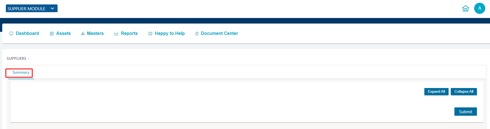
Collapse all option when clicked on “Collapse all” it will hide all the fields it has
When clicked on “Expand all” it will show all the fields it has
After Submitting the saved data will be shown as
If you would like to View, Edit or Delete the file you can use following Actions.
View: You can see the saved details by clicking on EYE icon
Collapse all option when clicked on “Collapse all” it will hide all the fields it has
When clicked on “Expand all” it will show all the fields it has
You can download the saved details as file by clicking on Download MIS
Edit:You can Edit the both saved details by clicking on ROUND icon
It will show you the Work flow for Employee
1) Current Status: It will show you as Active or Inactive
2) Change Status: Click on Dropdown and select option if he is not active anymore you can change the status to inactive
3) Activity history: It will show you Activity history how many times the status has been changed
If you would like to change the details you can change it and click on submit
Delete: : If you would like to delete the data click on “Delete” Icon the stored data will be deleted
You can see concern data by filtering the fields and also you can search by Job type
In Assets page you can use “special filters” for adding fields
You will see three options
Add: You can add Filed name, Condition and Comparison by clicking on “Add” option
Submit: If entered details are correct you can submit by clicking on “Submit” option
Clear: If entered details are not correct you can clear the data by clicking on “Clear” option
By Bulk Upload option upload large volume of records at one time by reading each record from .xlsx file.
Click on “Bulk Upload” option
Click on choose file option and select the files you want to upload and click on submit
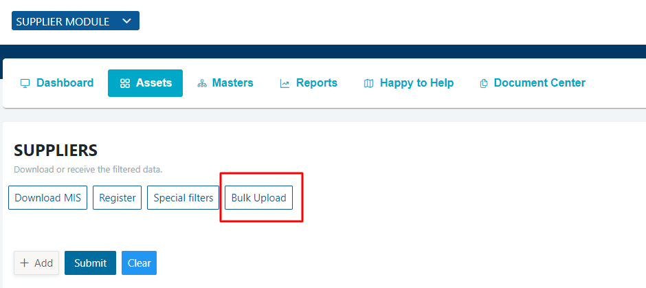
If you don't want to upload click on “cancel” it will stop uploading
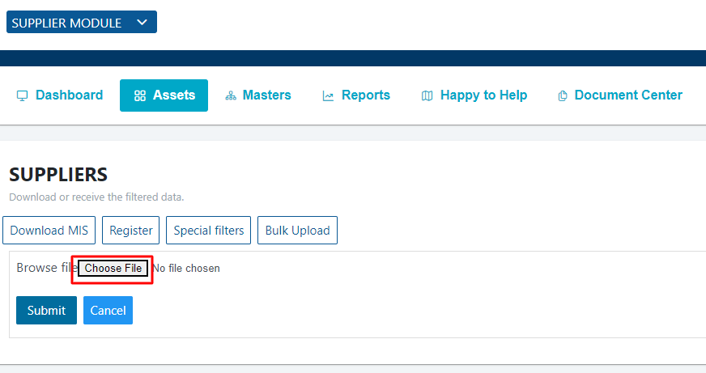
In MASTERS we can create GROUP NAME as category like “new work” and for group name we can create a sub category like Work health, benefits etc.,
You can Download MIS which consists of Current Status
You can Download MIS for each Category by clicking on Dropdown Button and select the category.
By clicking on “Add new” option it will show Summary with required Fields and fill the details and click on Submit
c.2.1.Summary
Collapse all option when clicked on “Collapse all” it will hide all the fields it has

When clicked on “Expand all” it will show all the fields it has

When all the required fields has been filled and submitted it will show you the Current Job Status as follows
If you would like to see the details of the filled information click on EYE icon
If you like to change or edit the details of the filled information click on ROUND icon
It will show you the Work flow
1) Current Status: It will show you as Active or Inactive
2) Change Status: Click on Dropdown and select option if he is not active anymore you can change the status to inactive
3) Activity history: It will show you Activity history how many times the status has been changed
If you would like to change the Name, ID and other fields you can change it and click on submit
Collapse all option when clicked on “Collapse all” it will hide all the fields it has
When clicked on “Expand all” it will show all the fields it has
If you need the details you can download by clicking on Download MIS
If you want Email notification select email ID which has been already entered in the details and click on Send Email
If you would like to delete the data click on “Delete” Icon the stored data will be deleted
You can see concern data by filtering the fields items and also you can search by Job type
You can check reports in the graphical format
The circle represents how many suppliers are there and clicking on the circle it will show First Level with circle and data and Second Level empty
After Clicking on First Level Report Circle it will show the Second Level Report if it is available and it will show circle with Color Representation
You can download the report by clicking on Download PDF
If you have any Queries, Please feel free to Contact us.
Name: COKUBE
Designation: Software Product Development
Organization: Software Product Development
Email: info@ongoframework.com
You can download the Documents from the Document Centre
Click on the File you would like to download
Hide or Add Module
Module Constants
In green screen IS_REGISTER column set as "1" Enable in signup page.
In green screen IS_REGISTER column set as "0" Disable in signup page.
Set to 1 - form Expands
Set to 0 - form Collapses
In green screen DEFAULT_EXPAND_ALL column set as "1" Enables.
In green screen DEFAULT_EXPAND_ALL column set as "0" Disables.

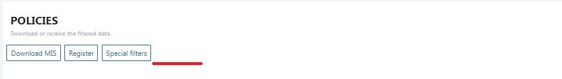
Set to 1 - Displays
Set to 0 - Hides
In green screen HIDE_FOOTER column set as "1" it Displays.
In green screen HIDE_FOOTER column set as "0" it Hides.
Set to 1 - Hides
Set to 0 - Displays
In green screen HIDE_REPORT_PERCENTAGE column set as "1" it Hides.
In green screen HIDE_REPORT_PERCENTAGE column set as "0" it Displays.
1.DD/MM/YYYY
2.MM/DD/YYYY
3.YYYY/MM/DD
In green screen SHOW_PRIMARY column set as "1" it Displays.
Set to 1 - Displays
Set to 0 - Hides
In green screen SHOW_PRIMARY column set as "1" it Hides.
In green screen SHOW_PRIMARY column set as "0" it Hides.
Set to 1 - Displays
Set to 0 - Hides
In green screen SHOW_SECONDARY column set as "1" it Displays.
In green screen SHOW_SECONDARY column set as "0" it Hides.
In Green Screen "SHOW_SECONDARY" column & "SHOW_PRIMARY" column set as "1" enables toggle button.
CLAIM_TREND_SHOW : In Claim Edit model there is CLAIM TREND
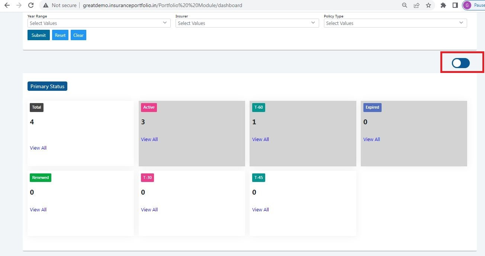
IS_SHOW_ACTIVITY_HISTORY :
Set to 1 - Displays
Set to 0 - Hides
In Green Screen "IS_SHOW_ACTIVITY_HISTORY" column set as "1" it Display.
In Green Screen "IS_SHOW_ACTIVITY_HISTORY" column set as "0" it Hide.
set to "1" -> Displaying multicolor labels.
set to "0" -> Displaying limited color labels.
In Green Screen "LOGIN_TITLE" column set to "Login - InsurTech Modules 123" displays in login page.
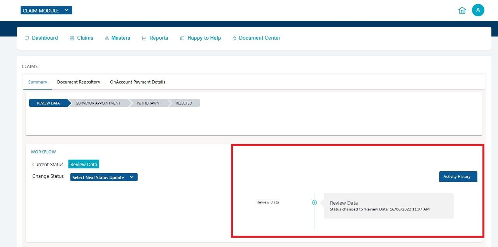
In Green Screen "LOGIN_SUB_TITLE" column set to " Enhanced Digital Experience 567 " displays in login page.
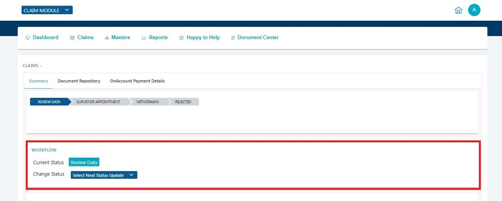
In Green Screen "BANNER_TITLE" column set to " Welcome To Advanced InsurTech Solution 789 " displays in login page.
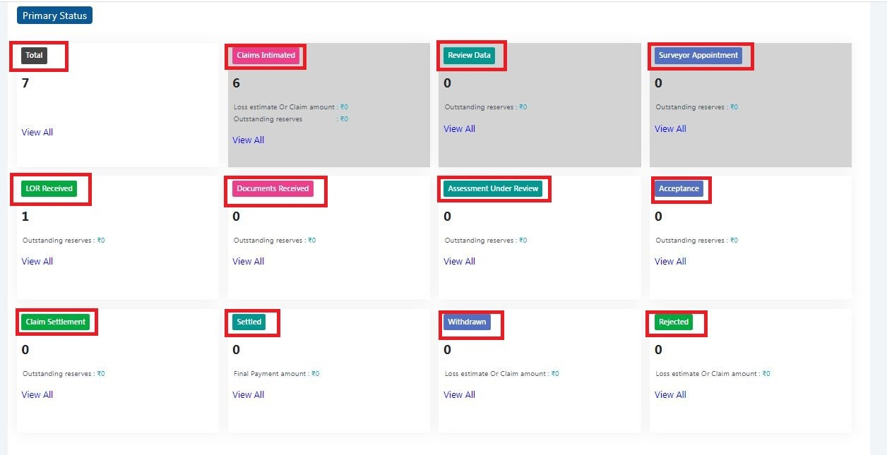
In Green Screen "BANNER_SUB_TITLE " column set to " Let's Get Started. " displays in login page.
In Green Screen " IS_LOGIN_SUB_TITLE_SHOW" column set as "0" it Hide.
In Green Screen "IS_LOGIN_TITLE_SHOW" column set as "0" it Hide.

Set to 1 - Displays
Set to 0 - Hides
In Green Screen "SELECT_MODULE_LOGINPAGE_SHOW" column set as "1" it Display.
In Green Screen "SELECT_MODULE_LOGINPAGE_SHOW" column set as "0" it Hide.
Set to 1 - Displays
Set to 0 - Hides
In Green Screen " IS_SHOW_PROFILE " column set as "1" it Display.
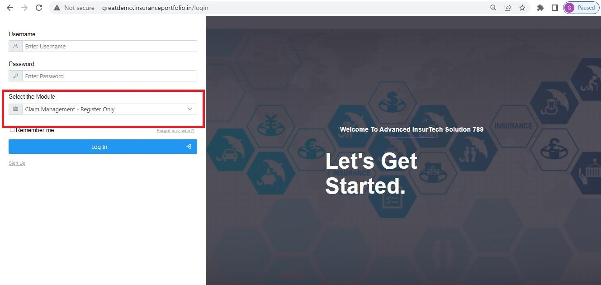
In Green Screen " IS_SHOW_PROFILE " column set as "0" it Display.
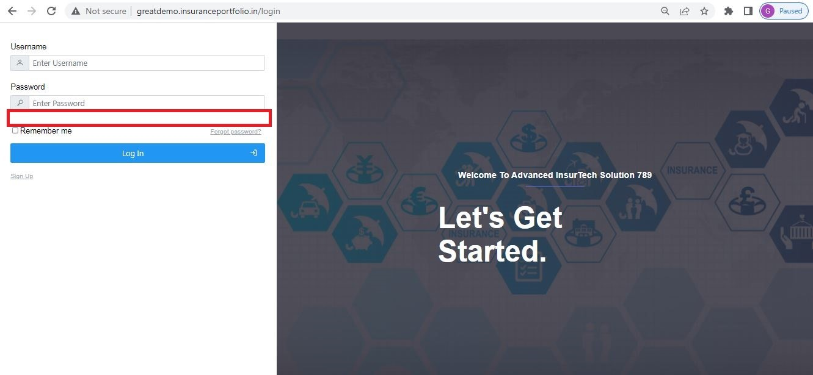
Set to 1 - Displays
Set to 0 - Hides
In Green Screen "IS_SHOW_LOGO " column set as "1" it Display.
In Green Screen "IS_SHOW_LOGO " column set as "0" it Display.

Set to 1 - Displays
Set to 0 - Hides
In Green Screen " IS_SHOW_LOGO_IN_LOGIN_PAGE " column set as "1" it Display.
In Green Screen " IS_SHOW_LOGO_IN_LOGIN_PAGE " column set as "0" it Display.
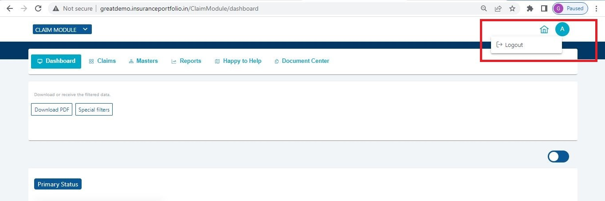
Set to 1 - Displays
Set to 0 - Hides
In Green Screen "IS_SHOW_FORGOTPASSWORD " column set as "1" it Display.
In Green Screen "IS_SHOW_FORGOTPASSWORD " column set as "0" it Display.
Set to 1 - Displays
Set to 0 - Hides
In Green Screen "EACH_JOB_DOWNLOAD_CSV" column set as "1" it Display.
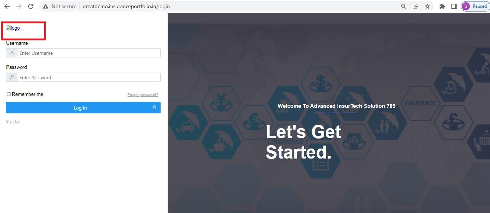
In Green Screen "EACH_JOB_DOWNLOAD_CSV" column set as "0" it Display.
Shown in year dropdown in application.
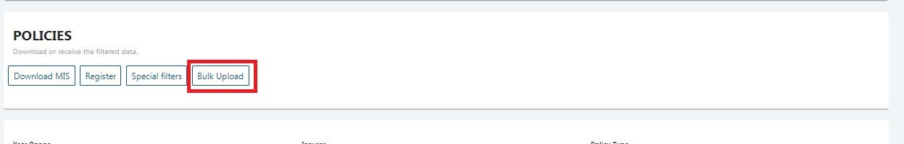
Extras #back to top
Web Hosting #back to top
Once you have finished all customizations, The next step is to upload your Landing Page to a Live Hosting Server. For that you will need to buy a Hosting Plan and a Domain name from a Service Provider.
Uploading to Server #back to top
Once you have registered a domain name and Hosting, You will get FTP details from your
hosting provider. Use that login details to connect with your server. You will need an FTP
Software for this such as FileZilla. Connect with your server and open /public_html
folder in your server. Then copy all HTML, CSS and JS files from your local machine to your
root /public_html folder in
your server. Please note the HTML files should be in the Server's root folder. If your
local project is in /your-folder/ Do not upload the folder directly. Instead
open the folder and select all HTML files and
CSS, JS folders and upload.
Website Optimization Tips #back to top
A Fast & Optimized Website has several factors which needs to be implemented in order to achieve the desired results. There are several Optimization Techniques available which will definitely affect your Website's Performance in a Positive Way & we want to share a few of them with you:
-
gZip Compression & Browser Caching
This is probably one of the Most Important Techniques you should definitely implement in order to bump up your Website's Loading Speed. gZip Compression is used to compress the Files that are delivered when loading a Website. It covers HTML, CSS, Javascript & Font Files along with other miscellaneous text files. Where as Browser Caching also covers Images & Videos apart from including the above files. This is used to saves the Static Data in your Browser itself so that when you open the Next Pages on the Same Website, the content does not gets Downloaded again, loading the Website fast.
gZip Compression & Browser Caching can be enabled using the
.htaccessFile on an Apache Web Server. You can use the Codes from here: https://github.com/h5bp/html5-boilerplate/blob/master/dist/.htaccess to enable these modules on your server. -
Image Compression & Optimization
We tend to use Lots of Images on our Websites but we often do not make efforts to Compress & Optimize them. Remember, the Larger the Image, the more time it takes to download and therefore this slows your website loading times affecting User Experience. Your customer will leave your website if it does not load within 3-5 Seconds which adversely affects your Sales. Therefore, it is important to Resize, Optimize & Compress your Images before using it on your Website. Here are some Tips which might come handy in optimizing images:
- Resize your Images: Resize your Images before using it on your
Website. Do not just Download an Image & place it as it is in your
Website's
<img>Tag without resizing it. The size/resolution of the Image matters since it is not recommended to use an Image size of1200pxx800pxin a Content Size of300pxx200pxas this is unnecessary. Resize it to300pxx200px - Image Formats: There are three common file types that are used for web images which are JPEG, GIF, & PNG. For images with a Flat Background use JPEG images, for images with a Transparent background use PNG images and for images with Animations use GIF images.
- Compressing Images: Images Compression is important as it
considerably reduces the size without losing the quality. There are several
FREE Image Optimization Tools available to Download.
For MAC use ImageOptim
For Windows use Riot for compressing JPEG Images & PNG Gauntlet for PNG Images.
- Resize your Images: Resize your Images before using it on your
Website. Do not just Download an Image & place it as it is in your
Website's
-
CSS & jQuery Minifications
It is also recommended that you Combine & Minify all your CSS Files to a single CSS File & all Javascript Files to a single JS File since Minification reduces the size of the File and Combining the files helps in reducing the number of HTTP requests made to the server. This is also an Important Factor in increasing the speed of your website. There are several tools available online to Minify your CSS & JS Files. Our recommendations are:
For CSS use CSS Minifier and For Javascript use Javascript Minifier. -
Content Delivery Network
You can use a CDN to further speed up your website. You can use the CDN to deliver static files of your website like CSS, JS, Images & Font Files. There are several CDN Hosting Providers available on the Internet but we would recommend MaxCDN or CloudFlare. Note: CDN setup requires Extra monthly Fees to setup, so it is completely optional & according to your needs. Cloudflare also has a Free plan, you can try that for free.
-
Fast Web Hosting Servers
A lot depends on your Web Hosting Servers, so it is recommended that you choose a Hosting Company/Server that provides a Reliable & a Fast Hosting Service. You can also choose our shared hosting plans. See above.
Credits #back to top
We are really thankful to the makers of the frameworks, plugins and images below. We used these to make this Landing Page more functional. Demo images, you have seen in Live Demo is not included in the download package because of their copyright restrictions.
Changelog #back to top
How to Upgrade #back to top
If you have purchased an earlier version and want to upgrade your website to the newwer version of this template, You can follow the steps. In each update, we will keep a changelog or version history, where we will keep the log of all changes made. We will list out the Changes made, Features added and Pages modified. So it will be easier for you to replace the existing.
If you have modified a file which has latest update, for example, CSS, Open both page in a code editor and use a Comparison Sofware or an Online Tool like Diff Now to compare changes in both files. Then you can manually copy paste the changed lines without affecting your file. NOTE: We recommend that you keep a separate file for new additions or changes if possible.
Version 1.0 (19 July, 2019) #back to top
Initial Version
Rate it #back to top
If you like the template, Please consider Rating it on Themeforest by Visiting your Downloads Page : http://themeforest.net/downloads That means a lot to me :)

Support #back to top
Please remember you have purchased a very affordable template and you have not paid for a full-time web design agency. Occasionally we will help with small tweaks, but these requests will be put on a lower priority due to their nature. Please be patient, polite and respectful. We will try to answer your questions as soon as possible
Support for my items includes:- Responding to questions or problems regarding the item and its features
- Fixing bugs and reported issues
- Providing updates to ensure compatibility with new software versions
- Customization and installation services
- Support for third party software and plug-ins
- Make sure your question is a valid issue and not a customization request.
- Make sure you have read through the documentation and any related guides before asking support on how to accomplish a task.
- Try to use "Google Search" for common questions. Most of the times, which will help faster than the support.
Thank you! #back to top
Once again, Thank you so much for purchasing this template and being by loyal customer. You can reach me pesonally on Twitter @surjithctly or via my Personal Email (No Support requests please.. use support website instead)